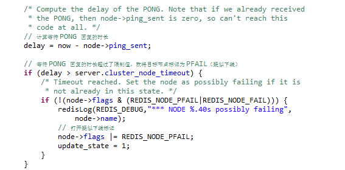
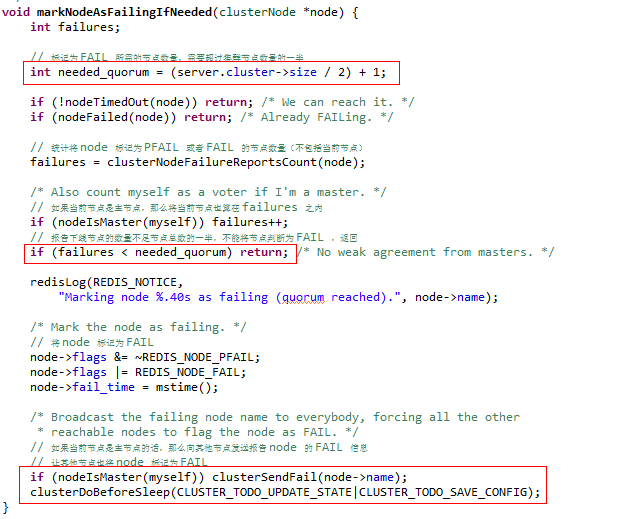
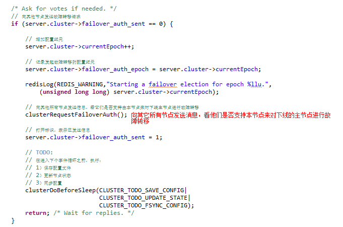
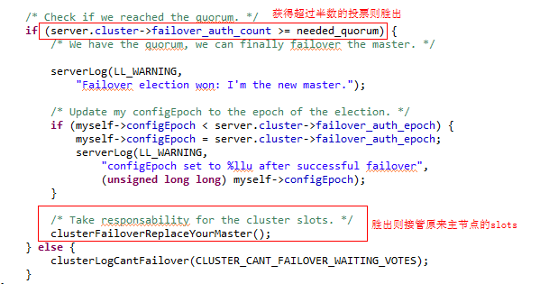

- 01 开篇词：从中间件开始学习分布式.md.html
- 02 走进分布式中间件（课前必读）.md.html
- 03 主流分布式缓存方案的解读及比较.md.html
- 04 分布式一致性协议 Gossip 和 Redis 集群原理解析.md.html
- 05 基于 Redis 的分布式缓存实现及加固策略.md.html
- 06 Redis 实际应用中的异常场景及其根因分析和解决方案.md.html
- 07 Redis-Cluster 故障倒换调优原理分析.md.html
- 08 基于 Redis 的分布式锁实现及其踩坑案例.md.html
- 09 分布式一致性算法 Raft 和 Etcd 原理解析.md.html
- 10 基于 Etcd 的分布式锁实现原理及方案.md.html
- 11 主流的分布式消息队列方案解读及比较.md.html
- 12 搭建基于 Kafka 和 ZooKeeper 的分布式消息队列.md.html
- 13 深入解读基于 Kafka 和 ZooKeeper 的分布式消息队列原理.md.html
- 14 深入浅出解读 Kafka 的可靠性机制.md.html
07 Redis-Cluster 故障倒换调优原理分析
Redis-Cluster 是 Redis 官方推出的集群方案，其分布式一致性协议基于 Gossip 算法（第03课中已经详细介绍）。当 Redis-Cluster 出现主节点故障后，集群会经历故障检测、选举、故障倒换三大步骤，在此期间 Redis-Cluster 是不能提供服务的，鉴于此，优化这三个步骤的耗时，便是保障集群可用性、提升性能的关键点之一。
需要说明的是，优化耗时并没有普适性的方案，而是需要根据集群的规模和应用场景有针对性的优化，因此，犹如 JVM 的优化，掌握优化的原理才能“治本”，以不变应万变。
1. Redis-Cluster 故障检测原理及优化分析
Redis-Cluster 中出现主节点故障后，检测故障需要经历单节点视角检测、检测信息传播、下线判决三个步骤，下文将结合源码分析。
1.1 单点视角检测
在第 03 课中介绍过，集群中的每个节点都会定期通过集群内部通信总线向集群中的其它节点发送 PING 消息，用于检测对方是否在线。如果接收 PING 消息的节点没有在规定的时间内（cluster_node_timeout）向发送 PING 消息的节点返回 PONG 消息，那么，发送 PING 消息的节点就会将接收 PING 消息的节点标注为疑似下线状态（Probable Fail，PFAIL）。如下源码：

需要注意的是，判断 PFAIL 的依据也是参数 cluster_node_timeout。如果 cluster_node_timeout 设置过大，就会造成故障的主节点不能及时被检测到，集群恢复耗时增加，进而造成集群可用性降低。
1.2 检测信息传播
集群中的各个节点会通过相互发送消息的方式来交换自己掌握的集群中各个节点的状态信息，如在线、疑似下线（PFAIL）、下线（FAIL）。例如，当一个主节点 A 通过消息得知主节点 B 认为主节点 C 疑似下线时，主节点 A 会更新自己保存的集群状态信息，将从 B 获得的下线报告保存起来。
1.3 基于检测信息作下线判决
如果在一个集群里，超过半数的主节点都将某个节点 X 报告为疑似下线 (PFAIL)，那么，节点 X 将被标记为下线（FAIL），并广播出去。所有收到这条 FAIL 消息的节点都会立即将节点 X 标记为 FAIL。至此，故障检测完成。
下线判决相关的源码位于 cluster.c 的函数 void markNodeAsFailingIfNeeded(clusterNode *node) 中，如下所示：

通过源码可以清晰地看出，将一个节点标记为 FAIL 状态，需要满足两个条件：
- 有超过半数的主节点将 Node 标记为 PFAIL 状态；
- 当前节点也将 Node 标记为 PFAIL 状态。
所谓当前节点可以是集群中任意一个节点，由于 Redis-Cluster 是“无中心” 的，集群中任意正常节点都能执行函数 markNodeAsFailingIfNeeded，不过，由于 Gossip 协议的特点，总有先后顺序。如果确认 Node 已经进入了 FAIL 状态，那么当前节点还会向其它节点发送 FAIL 消息，让其它节点也将 Node 标记为 FAIL 。需要注意的是：
- 集群判断一个 Node 进入 FAIL 所需的条件是弱（Weak）的， 因为其它节点对 Node 的状态报告并不是实时的，而是有一段时间间隔（这段时间内 Node 的状态可能已经发生了改变）；
- 尽管当前节点会向其它节点发送 FAIL 消息，但因为网络分区（Network Partition）的问题，有一部分节点可能无法感知 Node 标记为 FAIL；
- 只要我们成功将 Node 标记为 FAIL，那么这个 FAIL 状态最终（Eventually）总会传播至整个集群的所有节点。
1.4 节点故障检测优化
通过上面的分析，很明显参数 cluster_node_timeout 对节点故障检测的优化至关重要。当集群规模较小时，为了加快节点故障检测和故障倒换的速度、保障可用性，可将 cluster_node_timeout 设置得小一点。
我曾经主导过一个项目，客户要求集群单节点故障条件下，恢复时间不得超过 10 s。考虑到 Redis-Cluster 只有6个节点，通信成本可以容忍，我将 cluster_node_timeout 设置为 3 s，经测试，集群单节点故障恢复时间缩短至 8 s，满足了客户需求。
2. Redis-Cluster 选举原理及优化分析
2.1 从节点拉票
基于故障检测信息的传播，集群中所有正常节点都将感知到某个主节点下线（Fail）的信息，当然也包括这个下线主节点的所有从节点。当从节点发现自己复制的主节点的状态为已下线时，从节点就会向集群广播一条请求消息，请求所有收到这条消息并且具有投票权的主节点给自己投票。

2.2 拉票优先级
严格得讲，从节点在发现其主节点下线时，并不是立即发起故障转移流程而进行“拉票”的，而是要等待一段时间，在未来的某个时间点才发起选举，这个时间点的计算有两种方式。
方式一
如下代码所示，在故障主节点的所有从节点中，计算当前节点（当然也是故障主节点的从节点）的排名，排名按照复制偏移量计算，偏移量最大的从节点与主节点信息差异也最小，排名也就等于 0，其余从节点排名依次递增。通过排名计算发起选举的等待时间，根据源码，排名等于 0 的从节点无需等待即可发起拉票，其它排位的从节点则须等待，等待时间计算方法如下：
(newRank - oldRank)*1000ms，
其中，newRank 和 oldRank 分别表示本次和上一次排名。
注意，如果当前系统时间小于需要等待的时刻，则返回，下一个周期再检查。
源码如下：
方式二
既然是拉票，就有可能因未能获得半数投票而失败，一轮选举失败后，需要等待一段时间（auth_retry_time）才能清理标志位，准备下一轮拉票。从节点拉票之前也需要等待，等待时间计算方法如下：
mstime() + 500ms + random()%500ms + rank*1000ms
其中，500 ms 为固定延时，主要为了留出时间，使主节点下线的消息能传播到集群中其它节点，这样集群中的主节点才有可能投票；random()%500ms 表示随机延时，为了避免两个从节点同时开始故障转移流程；rank 表示从节点的排名，排名是指当前从节点在下线主节点的所有从节点中的排名，排名主要是根据复制数据量来定，复制数据量越多，排名越靠前，因此，具有较多复制数据量的从节点可以更早发起故障转移流程，从而更可能成为新的主节点。
源码如下：
可优化点
上面提到的 auth_retry_time 是一个潜在的可优化点，也是一个必要的注意点，其计算方法如下源码所示：
从中可以看出，auth_retry_time 的取值为 4*cluster_node_timeout (cluster_node_timeout>1s)。如果一轮选举没有成功，再次发起投票需要等待 4*cluster_node_timeout，按照 cluster_node_timeout 默认值为 15 s 计算，再次发起投票需要等待至少一分钟，如果故障的主节点只有一个从节点，则难以保证高可用。
在实际应用中，每个主节点通常设置 1-2 个从节点，为了避免首轮选举失败后的长时间等待，可根据需要修改源码，将 auth_retry_time 的值适当减小，如 10 s 左右。
2.3 主节点投票
如果一个主节点具有投票权（负责处理 Slot 的主节点)，并且这个主节点尚未投票给其它从节点，那么这个主节点将向请求投票的从节点返回一条回应消息，表示支持该从节点升主。
2.4 根据投票结果决策
在一个具有 N 个主节点投票的集群中，理论上每个参与拉票的从节点都可以收到一定数量的主节点投票，但是，在同一轮选举中，只可能有一个从节点收到的票数大于 N/2 + 1，也只有这个从节点可以升级为主节点，并代替已下线的主节点继续工作。
2.5 选举失败
跟生活中的选举一样，选举可能失败——没有一个候选从节点获得超过半数的主节点投票。遇到这种情况，集群将会进入下一轮选举，直到选出新的主节点为止。
2.6 选举算法
选举新主节点的算法是基于 Raft 算法的 Leader Election 方法来实现的，关于 Raft 算法，在第07课中将有详细介绍，此处了解即可。
3. Redis-Cluster 的 Failover 原理
所有发起投票的从节点中，只有获得超过半数主节点投票的从节点有资格升级为主节点，并接管故障主节点所负责的 Slots，源码如下：

主要包括以下几个过程。
（1）身份切换
通过选举晋升的从节点会执行一系列的操作，清除曾经为从的信息，改头换面，成为新的主节点。
（2）接管职权
新的主节点会通过轮询所有 Slot，撤销所有对已下线主节点的 Slot 指派，消除影响，并且将这些 Slot 全部指派给自己。
（3）广而告之
升主了，必须让圈子里都知道，新的主节点会向集群中广播一条 PONG 消息，将自己升主的信息通知到集群中所有节点。
（4）履行义务
在其位谋其政，新的主节点开始处理自己所负责 Slot 对应的请求，至此，故障转移完成。
上述过程由 cluster.c 中的函数 void clusterFailoverReplaceYourMaster(void) 完成，源码如下所示：
4. 客户端的优化思路
Redis-Cluster 发生故障后，集群的拓扑结构一定会发生改变，如下图所示：
一个 3 主 3 从的集群，其中一台服务器因故障而宕机，从而导致该服务器上部署的两个 Redis 实例（一个 Master，一个 Slava）下线，集群的拓扑结构变成了 3 主 1 备。
4.1 客户端如何感知 Redis-Cluster 发生故障？
结合上面介绍的故障场景，思考这样一个问题：当 Redis-Cluster 发生故障，集群拓扑结构变化时，如果客户端没有及时感知到，继续试图对已经故障的节点进行“读写操作”，势必会出现异常，那么，如何应对这种场景呢？
Redis 的高级客户端很多，覆盖数十种编程语言，如常见的 Java 客户端 Jedis、Lettuce、Redisson。不同客户端针对上述问题的处理方式也不尽相同，一般有以下几种处理策略：
- 主动型
客户端发起一个定时任务，与 Redis-Cluster 保持 “心跳”，定时检测 Redis-Cluster 的拓扑结构和运行状态，一旦集群拓扑结构发生改变，迅速刷新客户端缓存的集群信息，从而使客户端保持对服务端（Redis-Cluster）认知的实时性。
- 被动型：
这是一种比较 “懒惰” 的策略，客户端不主动监测服务端的状态。当 Redis-Cluster 发生故障，集群拓扑结构变化后，客户端仍然按照之前缓存的集群信息进行 “读写操作” ，就必然出现异常，客户端捕获该异常，然后读取集群的状态信息并刷新自己缓存的集群信息。
需要说明的是，通常进行 “读写操作” 都有重试机制，不会因一次失败就判断为集群问题，而去刷新缓存的集群信息，因此，客户端这种被动的刷新策略往往会消耗较多的时间，时效性相较于主动监测要差。
- 基本型：
针对 Redis-Cluster 故障，很多开源客户端根本就没有应对措施，只是简单地将异常抛出，需要开发者自己去实现相应的处理策略。
补充：对于 Redis-Cluster 故障的场景，有些开源客户端的应对措施更为复杂：集群故障后，拓扑结构变化，客户端不仅无法主动感知，甚至客户端与服务端（Redis-Cluster）之间的连接也会变得不可用，而这种 “不可用” 背后往往伴随着超时策略和重试机制，经过它们的判别后，才会最终抛出异常。用户捕获该异常后，需要重建连接，而后关闭旧连接并释放旧连接占用的资源。
上面的描述中，超时策略和重试机制是最为耗时的一环，同时，这也是优化空间最大的一环。
4.2 Redis-Cluster 故障后，客户端耗时优化举例
基于 4.1 节的分析，相信读者已经可以构想出优化思路。在此，我将以 Redis 的高级 Java 客户端 Lettuce 为例，简单介绍一下客户端的耗时优化。
2017 年，国内某电商巨头的仓储系统出现故障（一台服务器宕机），管理页面登录超时（超过一分钟才登录完成），经过评估，判定为系统性能缺陷，需要优化。通过分解登录耗时，发现缓存访问耗时长达 28 秒，进一步排查确认宕机的服务器上部署有两个 Redis 节点，结合日志分析，发现 Redis-Cluster 故障后（两个 Redis 节点下线），客户端感知故障耗 20 秒，为症结所在。
为了优化耗时，我当时阅读了开源客户端 Lettuce 的源码,原来 Lettuce 的连接超时机制采用的超时时间为 10s，部分源码如下：
当 Redis-Cluster 故障后，客户端（Lettuce）感知到连接不可用后会分别与故障的 Redis 节点进行重试，而重试的超时时间为 10s，两个节点耗时 10*2 s = 20 s。
至此，优化就显得很简单了，比如，思路 1 缩短超时参数 DEFAULT_CONNECT_TIMEOUT，思路 2 中 客户端感知到连接不可用之后不进行重试，直接重建新连接，关闭旧连接。
5. 后记
本课的内容较为基础，重点在于向读者介绍一种 “优化” 思路，当遇到问题时，不要手足无措，而是分别从服务端、客户端以及它们之间的连接入手，分析其运作机制，寻找可优化点。此外，不要迷信开源软件，在真相大白前，所有代码都是“嫌疑人”。